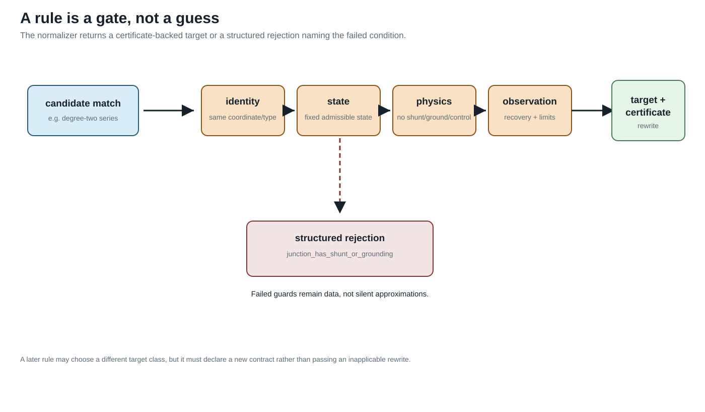

Degree-two series elimination
Page status: guarded exact series transformation with positive and negative tests; physical line-class closure remains open.
This chapter gives the first executable guarded rewrite. It deliberately separates an exact terminal-behaviour result from the stronger claim that two source assets form one longer homogeneous physical line.
Source and target
Let two multiconductor series elements be oriented as $\ell_1 i b$ and $\ell_2 b j$. The ordered conductor coordinates used by $\ell_1$ at the internal junction $b$ need not equal the order used by $\ell_2$. Let $\mathbf P$ be the permutation satisfying
\[\mathbf I_{\ell_2 b j}=\mathbf P\mathbf I_{\ell_1 i b}, \qquad \mathbf U_b^{(2)}=\mathbf P\mathbf U_b^{(1)}.\]
The outer terminal order at $j$ is relabelled into the coordinates of $\ell_1$. The source relations are
\[\mathbf U_i-\mathbf U_b^{(1)} =\mathbf Z_{\ell_1}\mathbf I_{\ell_1 i b},\]
\[\mathbf U_b^{(2)}-\mathbf U_j^{(2)} =\mathbf Z_{\ell_2}\mathbf I_{\ell_2 b j}.\]
If Kirchhoff conservation at $b$ gives the common series current, multiplying the second relation by $\mathbf P^{\mathsf T}$ and adding gives
\[\mathbf U_i-\mathbf P^{\mathsf T}\mathbf U_j^{(2)} = \left( \mathbf Z_{\ell_1} +\mathbf P^{\mathsf T}\mathbf Z_{\ell_2}\mathbf P \right)\mathbf I_{\ell_1 i b}.\]
Hence the exact behavioural composite has
\[\mathbf Z_{\ell_{\mathrm{eq}}} =\mathbf Z_{\ell_1} +\mathbf P^{\mathsf T}\mathbf Z_{\ell_2}\mathbf P.\]
This is claim TR-SER-001. It is a coordinate-aware terminal equivalence, not a license to add matrices whose rows merely happen to have the same position. The displayed formula also assumes that the two voltage-drop relations contain no mutual-impedance terms linking either source element to the other or to an external element. The coupled case is treated separately below.
Guards

The gate is the operational pattern used by the executable rule: a candidate rewrite is accepted only after its structural, constitutive, decision, and provenance preconditions have been checked.
The source type supplies a precondition before the junction guards are even considered: both factors are series-only multiconductor elements. A nominal-$\pi$ or other shunted factor is outside this rule. A shunt carried inside such a factor is not made admissible merely because no separately named shunt object is attached to $b$.
The implemented rule accepts the rewrite only when all of the following hold:
| Guard | Reason |
|---|---|
| $\ell_1$ ends and $\ell_2$ begins at $b$ | fixes the declared orientation |
| conductor labels at $b$ are unique and form the same set | makes $\mathbf P$ well defined |
| no current injection at $b$ | establishes a common series current |
| no shunt or grounding at $b$ | prevents current from leaving the series path |
| no measurement, control, or protection boundary at $b$ | keeps elimination within the declared observation contract |
| neither element is mutually coupled to the other source element | makes the displayed uncoupled impedance sum applicable |
| neither element is mutually coupled to any external element | prevents loss of a constitutive relation outside the pair |
A failed guard returns a structured rejection with the failed condition and the source evidence. In the executable model, mutual coupling is represented by the field $SeriesElement.mutual_couplings[other_element_id]$: an element-pair cross-impedance block keyed by the other asset identity. It is deliberately not a JunctionContext flag, because the same pairwise constitutive relation may span a junction or extend beyond it. The guard therefore inspects the source element fields that would invalidate the formula and does not return a best-effort equivalent.
Constraint and recovery maps
For per-conductor current-feasible sets $\mathcal C_{\ell_1}$ and $\mathcal C_{\ell_2}$, the exact target constraint is
\[\mathcal C_{\mathrm{eq}} =\mathcal C_{\ell_1} \cap \mathbf P^{\mathsf T}\mathcal C_{\ell_2}.\]
Independent upper current magnitudes therefore become the coordinate-aligned componentwise minimum, not their sum. Source quantities recover as
\[\mathbf I_{\ell_1 i b}=\mathbf I_{\mathrm{eq}},\qquad \mathbf I_{\ell_2 b j}=\mathbf P\mathbf I_{\mathrm{eq}},\]
\[\mathbf U_b^{(1)} =\mathbf U_i-\mathbf Z_{\ell_1}\mathbf I_{\mathrm{eq}}.\]
The generated target retains both member identities and the eliminated-junction identity in its provenance record.
Why this is not automatically a physical merge
Different construction codes do not invalidate the algebra above. They do invalidate the stronger rewrite into one instance of a homogeneous physical line class. Even equal codes are only a candidate condition: conductor material and geometry, frequency basis, line model, rating semantics, splices, maintenance boundaries, ownership, thermal state, outage state, and other physical facts may still differ.
Degree two is only a structural candidate for elimination. A valid rule must also inspect terminal coordinates, injections, shunts and grounding, observations, constraints, decisions, and the intended target equipment class.
This distinction is claim TR-SER-002: closure under behavioural elimination and closure within an equipment class are different questions.
Anti-patterns: algebra is not a type checker
Three tempting rewrites should be shown as refusals or as explicitly typed compositions:
| Rewrite | What can be true | Why the physical merge is unsafe |
|---|---|---|
| different line constructions $\ell_1$ and $\ell_2$ → one line | the pure-series terminal impedance can still be $Z_1+P^{\mathsf T}Z_2P$ | the target may falsely claim one construction, one owner, one thermal state or one rating basis |
| line + transformer → line | a fixed cascade can have a generic two-port relation | turns ratio, vector group, galvanic boundary, winding limits and controls disappear |
| external ground + transformer → transformer-only | a fixed nodal admittance can sometimes absorb the branch | neutral-current ownership, earth return, protection and topology dependence disappear |
The safe target for the first row is usually a CompositeSeriesBranch; for the second and third rows it is a typed multiport retaining the transformer and ground ports. If the target library has no such factor, the transformation is ill-typed even when a matrix calculation can be performed.
This is also why a nominal-$\pi$ series merge needs more than the displayed $Z$ matrices. Shunt currents make the two segment currents different at the intermediate bus, and cascading the sections generally produces a general two-port rather than a nominal-$\pi$ section with naively summed parameters.
Rejecting every heterogeneous series pair would be too strong. The error is silently asserting membership in a narrower physical line class, or dropping a junction constraint, shunt, grounding branch, control, rating or provenance boundary without recording it.
Mutual-coupling counterexample
Suppose the two series sections are themselves mutually coupled. In coordinates where their drop relations contain cross blocks $\mathbf Z_{12}$ and $\mathbf Z_{21}$, substituting $\mathbf I_2=\mathbf P\mathbf I_1$ gives
\[\mathbf Z_{\mathrm{eq,coupled}} = \mathbf Z_1 + \mathbf Z_{12}\mathbf P + \mathbf P^{\mathsf T}\mathbf Z_{21} + \mathbf P^{\mathsf T}\mathbf Z_2\mathbf P.\]
The two cross terms do not disappear merely because $b$ has zero injection. Coupling between adjacent sections of the same corridor is also not naturally described as external coupling at the junction: it is a constitutive relation between the two element identities. The implementation therefore stores mutual-coupling blocks against the other element identity and rejects the local uncoupled rule whenever either an internal-pair or external-pair block exists. A more general coupled-factor elimination could be exact, but it would be a different rule with the full coupled block as its source.
The executable negative witness uses two reciprocal two-conductor sections. It compares the displayed uncoupled sum with the four-term expression above and records an approximately 11.65% relative Frobenius-norm error. This is a counterexample to the insufficient guard, not a claim that mutual coupling always produces an error of that size.
The witness also records the representation boundary explicitly: a junction-only data model cannot express this case, while the pair-keyed mutual_couplings field can. A coupled-factor elimination would need the full pair block and a different target interface; silently dropping that field is a semantic loss.
A separate exact rule for a coupled section pair
The cross terms are not merely a reason to weaken the guard. They define a different, narrower rewrite. TR-SER-003 applies when the two candidate elements are series-only, the junction guards above hold, both pairwise blocks $\mathbf Z_{12}$ and $\mathbf Z_{21}$ are declared, and neither element has any mutual-coupling block to a third element. No reciprocity assumption is needed by the algebra; if a physical model requires $\mathbf Z_{21} = \mathbf Z_{12}^{\mathsf T}$, that is an additional model-specific guard.
With $\mathbf P$ aligning the conductor order at $b$, the target is the terminal-behaviour composite
\[\mathbf Z_{\mathrm{eq,coupled}} = \mathbf Z_1 + \mathbf Z_{12}\mathbf P + \mathbf P^{\mathsf T}\mathbf Z_{21} + \mathbf P^{\mathsf T}\mathbf Z_2\mathbf P.\]
The recovery map remains $\mathbf I_1 = \mathbf I_{\mathrm{eq}}$ and $\mathbf I_2 = \mathbf P\mathbf I_{\mathrm{eq}}$; member current limits therefore map by the same intersection as in the uncoupled rule. The certificate retains the pair identities and declares that physical homogeneous-line closure is not asserted. In particular, this rule does not turn a corridor coupling model into two independent line objects, and it rejects any external coupling that would be left dangling after the rewrite. It is exact for the declared external terminal voltage/current relation, not a license to erase the internal coupling semantics.
The executable certificate records this rule alongside the negative witness in experiments/generated/degree-two-series-certificate.json. The implementation and tests are self-checked; an independent mathematical review of the new rule remains an explicit review item.
Grounding counterexample
If a grounding or shunt admittance $\mathbf Y_g$ is attached at $b$, then
\[\mathbf I_{\ell_1 i b} -\mathbf P^{\mathsf T}\mathbf I_{\ell_2 b j} =\mathbf Y_g\mathbf U_b^{(1)}.\]
The currents are no longer a single common series variable. A Schur complement may still eliminate $\mathbf U_b$, but the result is a more general terminal relation and must not be reported as the series rule above. The prototype therefore rejects this application with junction_has_shunt_or_grounding.
Executable certificate
The package-independent prototype is implemented in experiments/transformations/SeriesElimination.jl. It returns either a target plus preservation certificate or a structured rejection. The executable case uses a two-conductor permutation and heterogeneous construction codes:
julia --project=experiments experiments/run_series_elimination.jl
julia --project=experiments experiments/test/runtests.jlIts machine-readable result is experiments/generated/degree-two-series-certificate.json. The certificate classifies the result as an exact behavioural reduction, records the permutation and constraint intersection, and explicitly refuses to call the target a homogeneous physical line. It also records the cross-coupled negative witness, its four-term exact expression, the failed element-pair guard, and the relative error made by the uncoupled expression. It conforms to the common interface in Certificate schema and composition, where the separately certified coordinate normalization is composed with this rule.